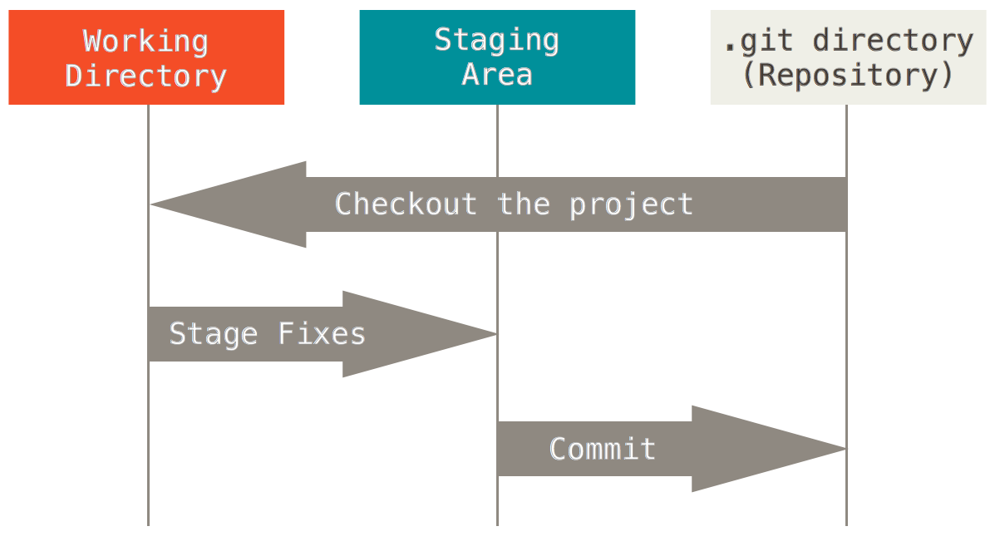

3.2Git工作原理
四个状态--------三个工作区
为了更好的学习Git，我们们必须了解Git管理我们文件的4种状态
未追踪（untracked）
已提交（committed）
该文件已经被git管理起来，接下来对该文件进行相关操作就可以实现版本控制的效果
- 已修改（modified）
某个文件已经被提交到暂存区过了，如果对该文件进行修改，该文件的状态就是已修改
- 已暂存（staged）
某个文件已经被提交到暂存区了
由此引入 Git 项目的三个工作区域的概念：
工作目录
工作目录是对项目的某个版本独立提取出来的内容。这些从Git仓库的压缩数据库中提取出来的文件，放在磁盘上供你使用或修改。
暂存区域
暂存区域是一个文件，保存了下次将提交的文件列表信息，一般在Git仓库目录中。有时候也被称作“索引”（Index），不过一般说法还是叫暂存区域。
Git 仓库
Git仓库目录是Git用来保存项目的元数据和对象数据库的地方。 这是Git 中最重要的部分，从其它计算机克隆仓库时，拷贝的就是这里的数据。

基本的Git工作流程如下：
1、在工作目录中修改文件。
2、暂存文件，将文件的快照放入暂存区域。
3、提交文件，找到暂存区域的文件，将快照永久性存储到Git仓库目录。